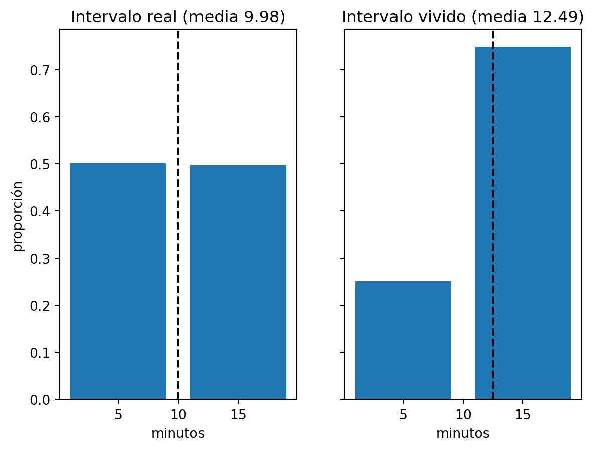

import numpy as np
import matplotlib.pyplot as plt
np.random.seed(2026)El autobús que esperas va a tardar más que el autobús medio
probabilidad
muestreo
simulación
python
Si los autobuses no pasan a intervalos iguales, el hueco en el que llegas a la parada dura más que el hueco medio. Con simulación.
Dicen que pasa un autobús cada diez minutos. Llegas a la parada sin mirar el reloj y esperas.
Un día esperas poco. Otro, mucho. Y si lo apuntaras durante un mes, notarías algo feo: te toca el hueco largo más veces de las que te corresponden.
Llegar a una parada al azar es una forma de muestrear. Y esa forma de muestrear tiene una preferencia.
Un servicio con dos tipos de hueco
Imagina una línea con dos tipos de hueco entre autobuses. La mitad duran 5 minutos y la otra mitad, 15.
La media de los huecos es 10. Es la frecuencia que anuncia el cartel.
Genero cien mil huecos y los coloco uno detrás de otro en una línea de tiempo.
intervalos = np.random.choice([5, 15], size=100_000)
fin = np.cumsum(intervalos)
print("media de los intervalos:", intervalos.mean())media de los intervalos: 9.9755Casi 10, como tenía que ser. La línea de tiempo es un tramo detrás de otro, y la variable fin guarda en qué minuto acaba cada uno.
Llegar al azar
Ahora llegas tú. Tiro cien mil llegadas repartidas al azar sobre toda la línea y miro en qué hueco cae cada una.
llegadas = np.random.uniform(0, fin[-1], size=100_000)
vividos = intervalos[np.searchsorted(fin, llegadas, side="right")]
print("media del intervalo vivido:", vividos.mean())
print("fracción en intervalos de 15 min:", (vividos == 15).mean())media del intervalo vivido: 12.4881
fracción en intervalos de 15 min: 0.74881El hueco en el que caes dura de media 12,49 minutos. El cartel dice 10.
Y el motivo se ve en la segunda línea. El 75 % de las llegadas cae en un hueco de 15 minutos. Los huecos de 15 son la mitad de los huecos y se llevan tres cuartas partes de los pasajeros.
Tiene sentido si lo piensas con una regla. Un hueco de 15 minutos ocupa el triple de línea que uno de 5. Si lanzas dardos a la línea, el triple de dardos acaba en el largo.
La fórmula
Cada hueco entra en tu muestra con probabilidad proporcional a su duración \(x\). Un hueco que dura el doble tiene el doble de probabilidades de contener tu llegada.
Con huecos de 5 y de 15 a partes iguales, las probabilidades pasan de \(0{,}5\) y \(0{,}5\) a \(0{,}25\) y \(0{,}75\). La media del hueco vivido sale de ponderar por la duración:
\[\frac{E[X^2]}{E[X]} = \frac{0{,}5 \cdot 25 + 0{,}5 \cdot 225}{10} = 12{,}5\]
En palabras: divides la media de los cuadrados entre la media. Siempre sale mayor o igual que \(E[X]\), porque \(E[X^2] \ge E[X]^2\). La igualdad solo se da cuando todos los huecos son iguales.
Es un resultado clásico de la teoría de renovación. Feller cuenta el caso de los autobuses en el segundo tomo de su Introduction to Probability Theory, en la sección de las paradojas del tiempo de espera.
Míralo en un gráfico.
fig, ax = plt.subplots(1, 2, sharey=True)
for a, datos, titulo in [(ax[0], intervalos, "Intervalo real"),
(ax[1], vividos, "Intervalo vivido")]:
a.hist(datos, bins=[0, 10, 20], weights=np.ones(len(datos)) / len(datos), rwidth=0.8)
a.axvline(datos.mean(), color="black", linestyle="--")
a.set_title(f"{titulo} (media {datos.mean():.2f})")
a.set_xlabel("minutos")
ax[0].set_ylabel("proporción")
plt.show()
A la izquierda, los huecos tal como los fabrica la compañía: mitad y mitad. A la derecha, los huecos tal como los vives. Las mismas dos duraciones, repartidas 25 y 75.
Cuanto más irregular, peor
Cambia la regularidad del servicio, mantén la media en 10 y mira qué le pasa al hueco vivido.
Pruebo tres líneas. Una pasa cada 10 minutos exactos. Otra es la de 5 y 15. La tercera tiene huecos exponenciales: autobuses que llegan al azar, sin horario. A veces dos seguidos, a veces nada en mucho rato.
n = 200_000
casos = {
"regular (todos 10)": np.full(n, 10.0),
"5 o 15": np.random.choice([5.0, 15.0], size=n),
"exponencial": np.random.exponential(10, size=n),
}
for nombre, x in casos.items():
fin = np.cumsum(x)
t = np.random.uniform(0, fin[-1], size=100_000)
v = x[np.searchsorted(fin, t, side="right")]
print(f"{nombre:20s} media real {x.mean():6.2f} desv {x.std():5.2f} media vivida {v.mean():6.2f}")regular (todos 10) media real 10.00 desv 0.00 media vivida 10.00
5 o 15 media real 10.00 desv 5.00 media vivida 12.51
exponencial media real 10.02 desv 10.00 media vivida 20.02Con huecos iguales no hay sesgo: 10 y 10. Con la dispersión de 5 y 15, el hueco vivido sube a 12,51. Con huecos exponenciales llega a 20,02.
Los tres servicios tienen la misma frecuencia media. En el tercero, el hueco que te toca dura el doble.
Una cosa sobre la espera
Aquí hay tres números y es fácil mezclarlos. El hueco medio, 10 minutos. El hueco en el que caes, 12,5. Y lo que esperas tú.
Llegas en un punto cualquiera dentro de tu hueco. Esperas de media la mitad de ese hueco. Con huecos de 5 y 15 salen 6,25 minutos. Sale de la cuenta, sin simular: \(E[X^2]/(2E[X])\).
Con huecos regulares esa cuenta da 5. Con los de 5 y 15, 6,25. Con los exponenciales, 10: el hueco medio entero.
El cartel dice 10. El hueco que te toca dura más. Tu espera es la mitad de ese hueco, y también crece con la irregularidad.
Por qué esto te importa
La frecuencia media de un servicio no te dice cuánto vas a esperar. Te lo dicen la frecuencia y la irregularidad juntas. Dos líneas con el mismo cartel pueden darte esperas muy distintas.
Y sirve para más cosas que los autobuses. Cada vez que llegas a un proceso en un momento al azar, cada cosa aparece en tu muestra según lo que dura. Los tickets abiertos que ves cuando abres la herramienta son, de media, más lentos que los tickets que se crean. Las sesiones largas aparecen de más en un log tomado en un instante.
Si alguien te enseña la media de algo que has observado llegando en un momento cualquiera, pregunta cómo se ha muestreado. Puede que esté midiendo lo largo.